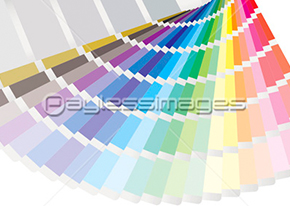
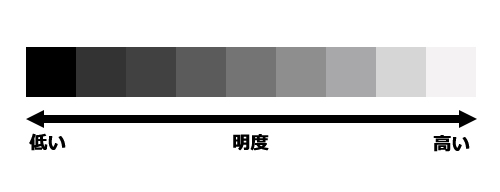
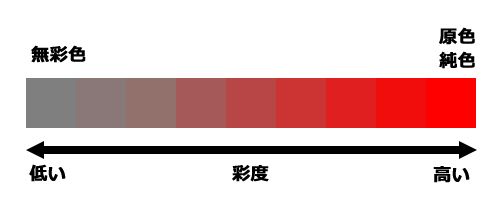
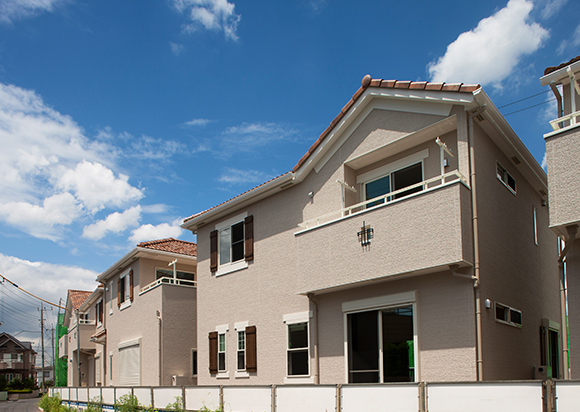
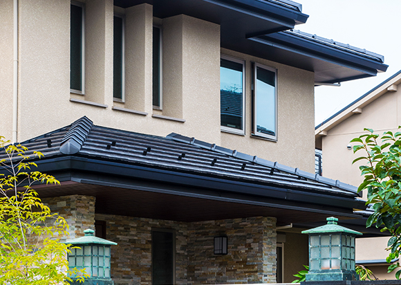
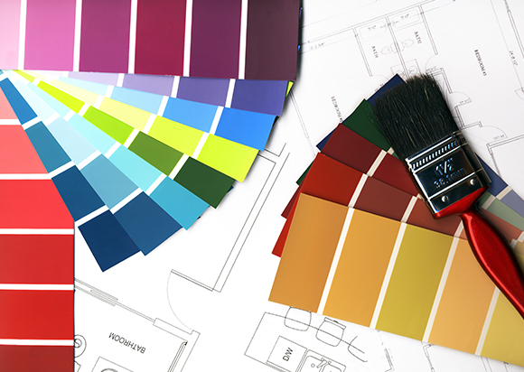
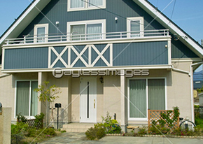

外壁塗装の色決めで知っておきたいこと
外壁塗装は住まいを長持ちさせるために行うものですが、自由にカラーコーディネートして模様替えできるという点も見逃せません。せっかく塗り直すのなら、より好みに合わせて、マイホームに満足できる見た目にしたいところです。そこでこちらのページでは、色選びをする際に知っておきたい基礎知識や、当社が提供する「カラーシミュレーション」などについてご紹介します。
色の基礎知識 ～「色の属性」とは？～
色を好みに合わせて調整するには、「色相」「明度」「彩度」という3つの属性のことを知っておくといいでしょう。難しく聞こえるかもしれませんが、髪を染めた経験のある方なら、誰しも考えたことがある簡単な内容です。業者や職人と色の打ち合わせをする際、この3属性のことを理解していると、より正確にコミュニケーションを取ることができます。
色相

「色相」とは、「赤」や「青」や「緑」などの色味を表す言葉です。「もっと赤っぽく」「もっと黄色っぽく」といったように、色味を調整する際に使います。
右に示したような図を「色相環」と言い、代表的な色に中間色を加えた20色の色相をグラデーションの輪で表しています。色相環の反対側にある色同士を「補色」と言い、お互いを引き立てる効果があると言われています。
明度

「明度」は、色の明るさを表します。明度が高くなることで白に近づき、明度が低くなることで黒に近づきます。同じ色相でも、明度が変わることで印象はガラっと変わります。
彩度

「彩度」は、色の鮮やかさを表す属性です。彩度が高い色を「原色」や「純色」と言い、彩度を下げていくほど灰色に近づきます。彩度の高い家は派手な印象になりやすいので、事前によく検討しておく必要があります。
色選びの注意点
街並みや風景との調和が重要

色選びで参考になるのは、自宅周辺の街並みです。たとえば彩度の低い落ち着いた色の家が並んでいる場合、原色に近い鮮やかすぎる色を選ぶと調和を乱してしまい、自宅だけが浮いた感じになってしまいます。周囲と調和する範囲で色を選ぶことをおすすめします。
色の候補は近隣の建物から

色のコーディネートは周辺の建物を参考にしましょう。ドアやサッシなどの色とのバランスを考えることも重要です。まずはおおまかに、ベージュ系、グレー系、ブラウン系、ブルー系などの中から候補を選出してみましょう。
サンプルを見る場合は面積効果に気をつける

業者と相談しながら色を選ぶ際は、小さなパネル型の塗装サンプルを見ながら相談することになります。実際の壁よりもはるかに小さいサンプルなので、同じ色でも実際の壁と見え方が変わってくる「面積効果」に注意しなければいけません。
「面積効果」では、色を塗る面積が大きいほど、
1. 色相：色合いが強調されて見える（赤はより赤っぽく、青はより青っぽく感じられる）
2. 明度：色が薄く明るく見える（想像していたよりも明るく見える）
3. 彩度：色が鮮やかに見える（思ったよりも派手に見える）
という傾向にあります。つまり、サンプルは実際の壁よりも地味に見えやすいということです。そこを加味してサンプルを確認すると良いでしょう。
外壁は2色までが基本

建物の凹凸に合わせてアクセントカラーを入れるコーディネートはおしゃれな印象になりますが、3色以上を配置するとゴチャゴチャした仕上がりとなってしまいます。基本は2色までと考えておきましょう。
つやの加減で印象が変わる

外壁塗装の塗料には「つや消し」「3分つや」「5分つや」「7分つや」「つや有り」の5タイプがあり、つや感によっても見た目の印象が変わります。つやがあるほど「塗り替えた感」が強く高級感のある仕上がりになり、つや消しになるほど落ち着いたマットな仕上がりになります。つやの有無は見た目だけでなく塗料の性能も左右するので、慎重に検討しましょう。
幸成のカラーシミュレーション
西東京を中心に外壁塗装を承っている株式会社 幸成では、「カラーシミュレーション」でお客様とじっくりご相談しながら、理想の外壁カラーコーディネートをお手伝いします。
色見本帳から選ぶ

まずは、当社がご用意した色見本帳でサンプルの色を確認していただきます。上記でもご説明したように、「面積効果」によって実際の壁とは見え方が変わってきますので、そこを考慮に入れましょう。もちろん担当者からもしっかり説明させていただきます。
コンピューターでシミュレーション

お客様のご自宅の写真をコンピューターに取り込み、そこに塗り色を当てはめることでシミュレーションを行います。ご自宅の見栄えはもちろん、周囲の景色とのマッチングも確認することが可能です。
実際の塗り板で確認する

最後に、実際の塗装色を使った塗り板で最終チェックをしていただきます。コンピューターでのシミュレーションで持ったイメージと相違がないか、じっくりご確認ください。色を確かめるときは、晴れた日に太陽光の下で少し離れて見ると、違いがわかりやすくなるのでオススメです。